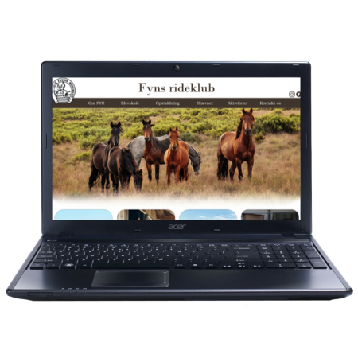

Udvalgte cases

Interaktiv installation
Til højre ses et tidligt prototype af et produkt, som jeg har arbejdet på med nogle medstuderende for HC
Andersen museuet. HC Andersen museumet ønskede, at bryde med den traditionelle museums oplevelse,
og ønskede sig derfor, at ny og moderne måde, at interegere med udstillingen på.
Til dette fandt vi på, at bruge noget af den nyeste teknologi der findes, nemlig et volumetric display, som
kan sammenlignes med det gamle hologram fra sci-fi film, bare endnu bedre.
Hermed fandt vi på produktet "Eventyrlig glasmontre", hvor man får et indblik i et eventyr, og selv kan
interegere med det. Fx. vil man ved den lille pige med svovlstikkerne, se en lille pige i 3D i et glasmontre,
som sidder helt alene, mørkt, og kun med nogle svovlstikker i hånden. Kører man så hånden forbi, bil hun tænde
en svovlstik, og man vil så få et lille blik af historien. Dette bil fortsætter indtil, at hun er brændt den sidste
af, og eventyret så på tragisk vis sluttes.
Redesign af spilcover
Skal du have redesignet et billedet til et cover eller andet sjov, så er det intet problem! Tiæ højre ses
et redesign jeg har lavet af spilcoverne Pokémon let's go Pikachu, og let's go Eevee. Istedet for de originale
karakter, har jeg skiftet dem ud med en anden pokémon, ved navn Caterpie.
Professionelle billeder
Skal du bruge nogle flotte og professionelle billeder til de sociale medier, din hjemmeside, eller måske
noget helt tredje, så det det heller ikke noget problem. Både produkt og portræt billeder kan lade sig gøre.
Dating app
Jeg kan ikke på nuværendetidspunkt kode en app
Men sidder du, og overvejer, at få lavet en app, så kan jeg stadig hjælpe! Sammen kan vi få sat rammerne
for din app, defineret din målgruppe og få den testet. Vi kan laves en prototype, som vi kan teste på, og
derved sende den videre til det firma, som skal lave appen, så du er sikker på, at den bliver helt som du
vil have det, ved hjælp fra mig.
Unikt logo
Står du og mangler et unikt og personligt logo, så er du kommet til den helt rette. Et logo kan være noget
af det vigtigste for en virksomhed, hold eller personlig brand.
Fortæl hvad dit logo skal kunne, hvilke værdier og tanker der skal lægge bag det, og vi får lavet et helt
personligt og unikt logo til dig. Logoet vil blive leveret både som .png format i de størrelser, som du ønsker
samt i .svg format, som betyder, at det efterfølgende vil kunne forstørres så meget, som du ønsker, uden at det
ændre på kvaliteten.
Redesign af hjemmeside
Skal du eller din virksomhed have en ny hjemmeside? Eller måske en app, nyt logo, eller bare optimeret det
Er din hjemmeside ved, at blive outdated, eller mangler du bare en helt ny hjemmeside, så skriv til mig.
Jeg kan både opretholde din hjemmeside, men jeg kan også redesign den, så den passer til din behov og forventninger.
Vil du blot have en uforpligtet samtale og nogle andre øjne på din hjemmeside, skal du også være mere end velkommen
til, at kontakte mig.
Kodning af hjemmeside
Skal du eller din virksomhed have en ny hjemmeside? Eller måske en app, nyt logo, eller bare optimeret det
Skal du have hjælp til, at kode en hjemmeside med html og css, eller blot have et kig på din hjemmeside, og
optimere den, så hjælper jeg gerne til. Jeg kan basis kodning af HTML og css, og kan validere koden på din
hjemmeside, så den opfylder reglerne for hjemmesider, som er sat af w3c, som sætter standarderne for World
Wide Web.
Jeg kan også hjælpe med din SEO, som gør, at du bliver nemmere at finde dig på nettet, og blandt andet gør,
at du kan blvie et af de første søge resultater på google.
Animation
Skal du bruge en sjov, eller måske mere seriøs animation til hjemmeside, sociale medier eller en video, så
kan jeg også hjælpe. Vi kan sammen lave simple animationer, som har et stærkt budskab, eller bare for sjov
og holder kunden underholdt.